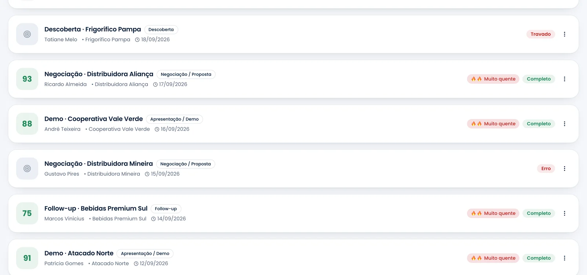

Sales Coach
salescoach.app.br
Sales Coach
salescoach.app.br
Para quem lidera
Todas as agendas do time,
com nota e temperatura.
Quem conduziu, quando foi e quanto valeu —
numa lista, não numa planilha.
Agendas do time

Sales Coach
salescoach.app.br
Quem conduziu, quando foi e quanto valeu —
numa lista, não numa planilha.
